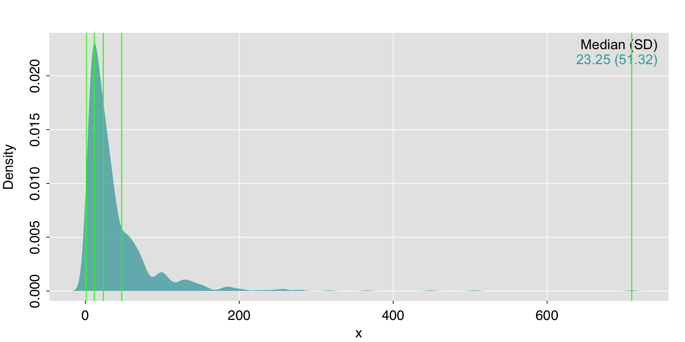

16 Data Transformations
.:rtemis 0.8.1: Welcome, egenn
[x86_64-apple-darwin17.0 (64-bit): Defaulting to 4/4 available cores]
Documentation & vignettes: https://rtemis.lambdamd.org16.1 Continuous variables
16.1.1 Standardization / Scaling & Centering with scale()
Depending on your modeling needs / the algorithms you plan to use, it is often important to scale and/or center your data. Note that many functions, but not all, will automatically scale and center data internally if it is required by the algorithm. Check the function documentation.
Standardizing, i.e. converting to Z-scores, involves subtracting the mean and dividing by the standard deviation.
Scaling and centering in R is performed with the scale function. By default, both arguments scale and center are set to TRUE:
iris.scaled <- scale(iris[, -5])First, let’s check that it did what we were hoping:
colMeans(iris.scaled) Sepal.Length Sepal.Width Petal.Length Petal.Width
-4.480675e-16 2.035409e-16 -2.844947e-17 -3.714621e-17
apply(iris.scaled, 2, sd)Sepal.Length Sepal.Width Petal.Length Petal.Width
1 1 1 1 Good - We got effectively 0 mean and standard deviation of 1 for each column.
If you are manually scaling and/or centering data for supervised learning, you must:
- Perform scaling and centering on your training data
- Save the centering and scaling parameters for each feature
- Apply the training set-derived centering and scaling parameters to the test set prior to prediction/inference.
A common mistake is to either scale training and testing data together in the beginning, or scale them independently.
Let’s get the scale and center attributes:
attributes(iris.scaled)$dim
[1] 150 4
$dimnames
$dimnames[[1]]
NULL
$dimnames[[2]]
[1] "Sepal.Length" "Sepal.Width" "Petal.Length" "Petal.Width"
$`scaled:center`
Sepal.Length Sepal.Width Petal.Length Petal.Width
5.843333 3.057333 3.758000 1.199333
$`scaled:scale`
Sepal.Length Sepal.Width Petal.Length Petal.Width
0.8280661 0.4358663 1.7652982 0.7622377 Let’s save the scale and center attributes and then check some values so that we are clear what is happening:
(.center <- attr(iris.scaled, "scaled:center"))Sepal.Length Sepal.Width Petal.Length Petal.Width
5.843333 3.057333 3.758000 1.199333
(.scale <- attr(iris.scaled, "scaled:scale"))Sepal.Length Sepal.Width Petal.Length Petal.Width
0.8280661 0.4358663 1.7652982 0.7622377
Sepal.Length_scaled <- (iris$Sepal.Length - .center[1]) / .scale[1]
all(Sepal.Length_scaled == iris.scaled[, "Sepal.Length"])[1] TRUENote: Due to limitation in numerical precision, checking sets of floats for equality after multiple operations is not recommended. A good option is to plot, if possible:
mplot3.fit(Sepal.Length_scaled, iris.scaled[, "Sepal.Length"])
16.1.2 Log-transform with log()
For the following example, x is an unknown feature in a new dataset we were just given.
We start by plotting its distribution:
mplot3.x(x)We can see it is highly skewed. A log transform may help here.
Let’s check:
Looks like a good deal.
16.1.3 Data binning with cut()
A different approach for the above variable might be to bin it.
Let’s look at a few different ways to bin continuous data.
16.1.3.1 Evenly-spaced interval
cut() allows us to bin a numeric variable into evenly-spaced intervals.
The breaks argument defines the number of intervals:
[1] (0.291,178] (0.291,178] (0.291,178] (0.291,178] (0.291,178] (0.291,178]
Levels: (0.291,178] (178,355] (355,533] (533,711]
table(x_cut4)x_cut4
(0.291,178] (178,355] (355,533] (533,711]
977 19 3 1 Interval Notation
[3, 9) represents the interval of real numbers between 3 and 9, including 3 and excluding 9.
Because the data is so skewed, equal intervals are not helpful in this case. The majority of the data gets grouped into a single bin.
Let’s visualize the cuts.
[1] 1.0000 178.2453 355.4905 532.7358 709.9811
mplot3.x(x, par.reset = FALSE)
# plot(density(x)) # in base R
abline(v = xcuts5, col = "red", lwd = 1.5)Note: We used par.reset = FALSE to stop mplot3.x() from resetting its custom par() settings so that we can continue adding elements to the same plot, in this case with the abline() command.
16.1.3.2 Quantile cuts
Instead, we can get quantiles with quantile(). We ask for 5 quantiles using the lngth.out argument, which corresponds to 4 intervals:
0% 25% 50% 75% 100%
1.00000 11.53621 23.24769 47.20410 709.98108
mplot3.x(x, par.reset = F)
# plot(density(x)) # in base R
abline(v = xquants5, col = "green", lwd = 1.5)
The breaks argument of cut() allows us to pass either an integer to define evenly-spaced breaks, or a numeric vector define the position of breaks.
We can therefore pass the quantile values as break points.
Since the quantile values begin at the lowest value in the data, we need to define include.lowest = TRUE so that the first interval is inclusive of the lowest value:
x_cutq4
[1,11.5] (11.5,23.2] (23.2,47.2] (47.2,710]
250 250 250 250 With quantile cuts, each bin contains the same or roughly the same number of observations (+/- 1).
16.2 Categorical variables
Many algorithms (or their implementations) do not directly support categorical variables. To use them, you must therefore convert all categorical variables to some type of numerical encoding.
16.2.1 Integer encoding
If the categorical data is ordinal, you can simply convert it to integers.
For example, the following ordered factor:
(brightness <- factor(c("bright", "brightest", "darkest",
"bright", "dark", "dim", "dark"),
levels = c("darkest", "dark", "dim", "bright", "brightest"),
ordered = TRUE))[1] bright brightest darkest bright dark dim dark
Levels: darkest < dark < dim < bright < brightest…can be directly coerced to integer:
as.integer(brightness)[1] 4 5 1 4 2 3 216.2.2 One-hot encoding
When categorical features are not ordinal, and your algorithm cannot handle them directly, you can one-hot encode them. In one-hot encoding, each categorical feature is converted to k binary features, where k = number of unique values in the input, such that only one feature has the value 1 per case. This is similar to creating dummy variables in statistics, with the difference that dummy variables create k - 1 new variables.
admission_reasons <- c("plannedSurgery", "emergencySurgery", "medical")
(admission <- sample(admission_reasons, 10, T)) [1] "emergencySurgery" "medical" "medical" "emergencySurgery"
[5] "medical" "emergencySurgery" "medical" "medical"
[9] "emergencySurgery" "emergencySurgery"We can use the rtemis oneHot() function:
(admission_oneHot <- oneHot(admission)) admission.emergencySurgery admission.medical
[1,] 1 0
[2,] 0 1
[3,] 0 1
[4,] 1 0
[5,] 0 1
[6,] 1 0
[7,] 0 1
[8,] 0 1
[9,] 1 0
[10,] 1 0